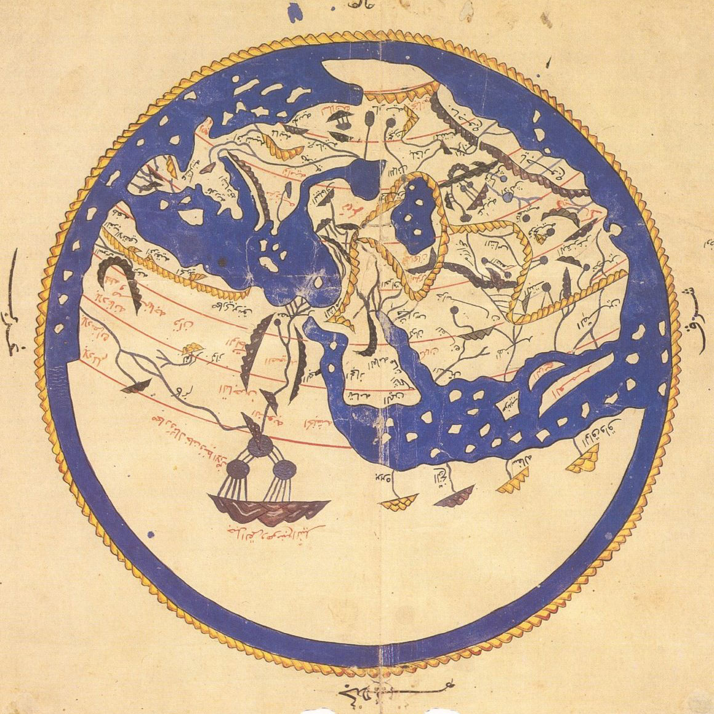
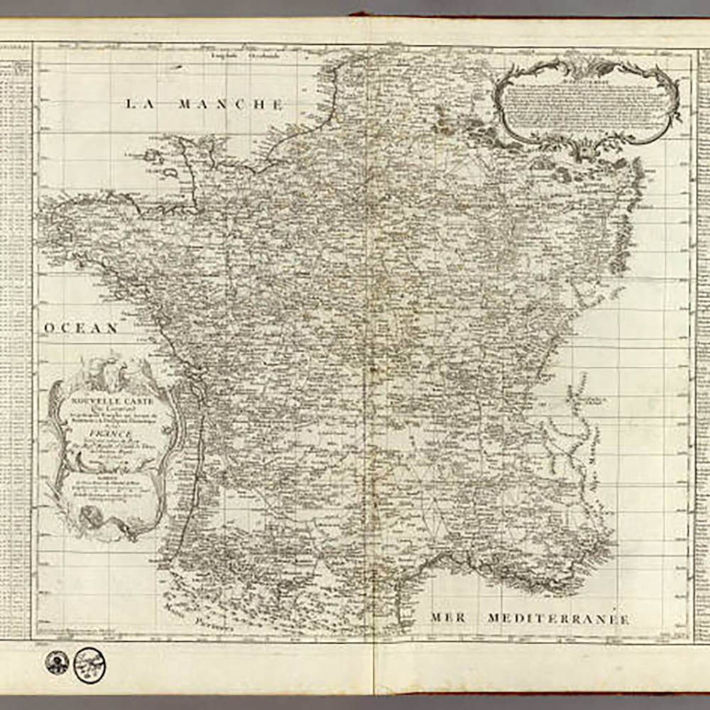

Historical Reference
Throughout history, our understanding of geography has evolved with technology.
From early beliefs in a flat Earth to Pythagoras and Aristotle's proposal of a spherical world,
each leap in observation reshaped how we perceive space. With the advent of satellites and
advanced sensing tools, we now capture near-complete, real-time data of Earth's surface.
Today, a new shift is underway: AI is poised to transform how we interpret, interact with,
and generate geospatial knowledge—pushing GIS from a static tool into a dynamic, intelligent system.
Major historical changes of technology changing GIS perception
Major historical changes of technology changing GIS perception

1. Al-Idrisi's Tabula Rogeriana (1154)
Al-Idrisi created one of the most accurate pre-modern world maps through Synthesizing geographic knowledge from traders, travelers, and explorers into a structured world view
Al-Idrisi created one of the most accurate pre-modern world maps through Synthesizing geographic knowledge from traders, travelers, and explorers into a structured world view

2. Jean-Dominique Cassini's Maps:
Scientific Ground Measurement through Triangulation & Surveying (1700s-1800s)
Jean-Dominique Cassini developed the first topographic map of an entire France (France) based on systematic triangulation. The result of the map is much more accurate than maps generated by surveying and traveling.
Jean-Dominique Cassini developed the first topographic map of an entire France (France) based on systematic triangulation. The result of the map is much more accurate than maps generated by surveying and traveling.

3. Blue Marble from Apollo 17 (1972):
First full-view photograph of Earth as a single, spherical object fully illuminated by the Sun
The Blue Marble is the first and the most famous Earth image. It became a symbol of global awareness, influencing environmentalism, planetary-scale science, and eventually global GIS thinking
The Blue Marble is the first and the most famous Earth image. It became a symbol of global awareness, influencing environmentalism, planetary-scale science, and eventually global GIS thinking

4. Satellite Images of Earth from Landsat GIS satellites (1972 and onward)
Satellite techonology enabled consistent, multispectral satellite imagery of Earth's surface for agriculture, urbanization, deforestation, etc. For every updated landsat, the images of the Earth is becoming much more accurate, and detailed.
Satellite techonology enabled consistent, multispectral satellite imagery of Earth's surface for agriculture, urbanization, deforestation, etc. For every updated landsat, the images of the Earth is becoming much more accurate, and detailed.